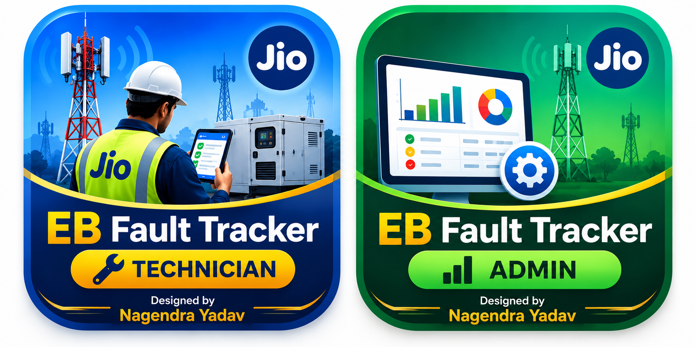

EB Fault Tracker
Choose your app to continue

Technician access is protected by an individual access link. Paste your existing technician link when prompted; it is not saved on this public homepage.
Choose your app to continue

Technician access is protected by an individual access link. Paste your existing technician link when prompted; it is not saved on this public homepage.